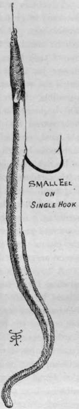
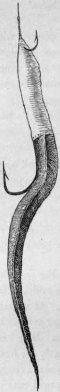
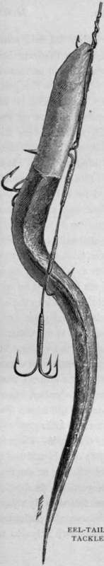

Eels
Description
This section is from the book "Sea Fishing", by John Bickerdyke. Also available from Amazon: Sea Fishing.
Eels
The white belly-skin of a conger is suitable for fish-skin flies and similar whiffing baits. For pollack there are few more killing baits than a small eel about four or five inches in length. It may be either the freshwater eel or a little conger. Where a streamlet flows down through a valley out on to the seashore and loses itself in rocky pools, there small eels are almost certain to be found. I remember sending on an old Scotch fisherman to just such a place to search for bait. An hour later we joined him, and, seeing no can, pot, or pan of any kind in which the bait could be put, jumped to the conclusion that we should have to depend upon the creations of the tackle-maker, for that day at least.
' What, no bait, Sandy ?' we said.
' Oh ! aye,' was the reply, ' I have ferry many baits'.
' But where are they ? '
' Oh, joost here,' and he slapped his trousers pockets with his hand ! And sure enough, in company with some butter-fish, a piece or two of seaweed, and a plug of tobacco which the old man had forgotten, were about a dozen little wriggling eels with which we did great execution that afternoon.
Large pollack have such capacious mouths that it is not, as a rule, necessary to arm the tail of the eel, which, if placed on a good-sized hook in the manner illustrated on the previous page, will be found killing. If the end of the hook shank is not eyed nor flattened, a large shot must be squeezed on the gut or gimp just above the hook. The eel, which is partly threaded on the hook, is then brought up the shank until the shot enters its mouth. A turn or two of waxed thread round its nose above the shot will keep it in position. This is a most lasting bait, often catching many fish.
I have not the least doubt that the fish take the so-called red rubber sand eels for small congers, and have noticed that the natural bait invariably secures the largest fish. If no baits of the right size are obtainable, the tail of a larger eel can be used—about six or seven inches of it is sufficient. The flesh just at the cut should be removed for half an inch, the hook point inserted, and the tail brought up to the top of the shank, just as if a whole eel were being adjusted, where it may be caught on to a small hook placed half an inch above the large one. This is the method illustrated (p. 98). But the plan recommended for the small eel can be followed ; that is to say, if a flatted or eyed hook is being used, a piece of thread or yarn (waxed if possible) should be tied tightly round the eel skin above the eye or flat end of the hook, to keep the bait from slipping down ; and to complete it neatly, turn over the sides of the skin, and sew them down to the eel with needle and cotton. This forms a very good bait—attractive, tough, and lasting—which will kill many fish. If the hook which is used is of the ordinary kind and is whipped on to the line, it is necessary to bite the shot on the gut or gimp just above the end of the shank, the eel skin being tied just above the shot. This is a much better plan with these baits than using the two-hook tackle recommended for lobworms. If the small upper hook is used, the eel is pulled off it at each run from a fish and is soon rendered useless. At the same time I have thought it almost necessary to illustrate this form of tackle, as it is one a good deal used. It is just possible that the eel tail is more attractive to the fish than the small eel, owing to its remarkable head.
If the fish are small or are biting shyly, then it is very easy to vary the tackle by adding a triangular or a second single hook. In any case there should be a swivel on the line just below the lead, for a very slight twist will cause the eel to spin, although, as I have said, the spinning is not necessary. I have seen it stated that the eel bait is all the more deadly if the tail end and about two-thirds of its body are skinned. I have never tried this experiment, having always been perfectly satisfied with the killing powers of the eel in its natural condition, in which state it is extremely durable.
Eel Tail Baits.
Those who doubt the efficacy of the single hook for sea fishing may try the flight used by pike fishers, an illustration of which is reproduced here from the Badminton volume on Freshwater Fishing. In this case, if a portion of an eel is used, two inches or more of the skin must be turned back and the bone and flesh beneath removed. Then the skin is pushed up again, to enable a piece of thread to be tied round it just above the end of the severed bone. That done, the piece of skin is again turned over and taken down towards the tail, its edge being neatly sewn to the sides of the bait. A capital artificial head is thus made. These baits can be kept in salt for a long time, and are a great convenience.
Flounders
Flounders rank among the best baits for crab and lobster pots, and for such purposes are sometimes dried and stored away, being, of course, previously gutted. For lobsters in particular they should not be mildewed nor musty, so that a dry storage place is important. Very small flounders or other flat fish, somewhere about the size of a five-shilling piece, are first-rate baits, used alive, for large bass. They are obtainable in unlimited quantities from the shrimpers.

Continue to:
- prev: Earthworms
- Table of Contents
- next: Garfish
Tags
fishing, hooks, bait, fishermen, spanish mackerel, mackerel fishing